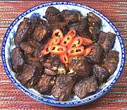

|
Spare Ribs with Chili Bean SauceChina | ||||
| Serves: Effort: Sched: DoAhead: |
4 side *** 1-1/2 hrs Reheat |
An excellent deeply flavorful appetizer or meat side dish, easy to make too. I use my 13" wok for the whole process, washing it between steps. The frying step could be omitted, but the flavor would be less intense. | |||
|
1-1/2 ar ------ 3 1/4 1 2 1 1 1/4 ------ 2 1 |
# --- cl c T t t T t --- c T |
Pork Spare Ribs (1) Water -- Sauce Garlic Rice Wine (2) Chili Bean Paste (3) Hoisin Sauce Sugar Soy Sauce, dark Salt ----------- Water Lard or Oil (4) |
Make: - (1-1/2 hrs - 1/2 hr work)
|